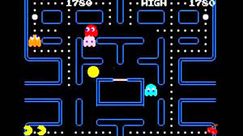

Een computerspel of in het Engels en omgangstaal ook wel game genoemd, is een elektronisch spel dat op een computer, console of handheld gespeeld wordt. Steeds vaker zijn deze spellen ook voor andere systemen en computers, zoals pda's, mobiele telefoons, tablets en draagbare spelcomputers verkrijgbaar. Veel computerspellen zijn videospellen. "Spel" wordt hier in de ruime zin van het woord gebruikt, er zijn ook serious games. Een spel kan bedoeld zijn om individueel te spelen, en/of om met een of meer anderen te spelen. Bij meerdere spelers kan het spelen om de beurt gaan, of tegelijk, of elke speler kan apart kiezen wanneer hij meedoet, zoals bij een spel waarin gezamenlijk een virtuele wereld wordt opgebouwd. Veel computerspellen vanaf eind jaren 90 bieden de mogelijkheid om online te spelen, met name de schietspellen en MMORPG's. Online spelen betekent vaak dat er met andere spelers samen gespeeld kan worden via een internetverbinding, maar het kan ook gaan om een website waarop computerspellen worden aangeboden (de zogenaamde browserspellen). Met offline spelen speelt men vaak door een verhaallijn. Hiervoor is geen internet nodig, maar men moet wel in het bezit zijn van het hele spel. Als een klassiek spel zoals schaken op een computer wordt gespeeld dan wordt het daarmee ook een computerspel.
Vaak wordt de benaming videospel als een synoniem gezien voor computerspel. Niet elk computerspel is echter een videospel. Een videospel is een visueel computerspel en dat gaat voor de meeste games op. Niet bij alle computerspellen is dat echter het geval. Computerspellen die geen videospel zijn, zijn onder andere op geluid- of op tekst gebaseerde computerspellen en computerspellen voor blinde mensen. Bij een videospel bestuurt de speler vaak een personage al of niet in een voertuig, dat zich door een virtuele omgeving begeeft en daar handelingen verricht, reagerend op wat hij in de virtuele omgeving aantreft en wat er gebeurt. Op het beeldscherm wordt dit getoond vanuit een overzichtsperspectief of vanuit het perspectief van het personage. In het laatste geval valt het spel onder het begrip virtuele werkelijkheid. Het besturen van de kijkrichting (al of niet automatisch samenvallend met de bewegingsrichting) kan dan gebeuren met een knop of hendel, maar ook, bij gebruik van een head-mounted display, door het draaien van het hoofd.
Geregeld komen een aantal gamers bijeen in zogenaamde LAN-parties. Dit is een evenement waarbij meerdere gamers tezamen komen om dan een tijd lang (bijvoorbeeld een weekend) enkel te gamen over een LAN-netwerk. LAN-party's zijn ontstaan in de jaren negentig, toen netwerkapparatuur betaalbaar werd voor consumenten. Ook via internet worden er veel computerspellen tegelijk bespeeld door meerdere spelers. Veel hedendaagse computerspellen hebben naast hun standaard singleplayermodus ook een online multiplayermodus. Een aparte groep hier binnen zijn de MMORPG-spellen, zoals RuneScape, World of Warcraft of Guild Wars. Deze spellen zijn er geheel op gemaakt om online te worden gespeeld met meerdere personen tegelijk. Een partyspel of partygame is een computerspelgenre dat wordt gespeeld in groepen, met bekenden en/of familie, en waarmee in competitie- of samenwerkingsverband kan worden gestreden. Een partyspel bestaat vaak uit verschillende minispellen die met meerdere spelers op een beeldscherm gespeeld kan worden.